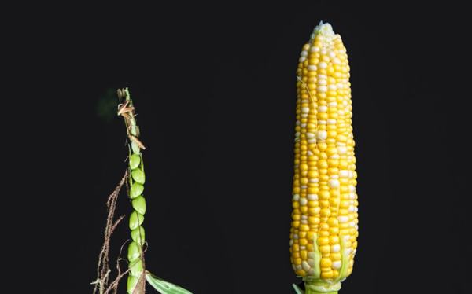

04-30 01:06

細心的讀者可能注意到前面那段敘事的奇異之處：小麥、大麥、小米、大米等等都是野生階段就可以食用，在Hunter-gatherer時代已經是人類飲食的一部分，農業馴化理所當然；但如果Teosinte原本沒有食用價值，偶然突變引發人類注意去進行人擇的可能性就極小，在野生條件的天擇下卻應該很快將其淘汰。當前學術界的主流理論，認爲Teosinte在突變前就是作物，但培育的目的不是種子而是甜莖，可以榨汁用來釀酒（參見《Sweet Beginnings：Stalk Sugar and the Domestication of Maize》；所以不只是大麥、葡萄和大麻，玉米也是因爲古人類的宗教信仰需要而被馴化的。